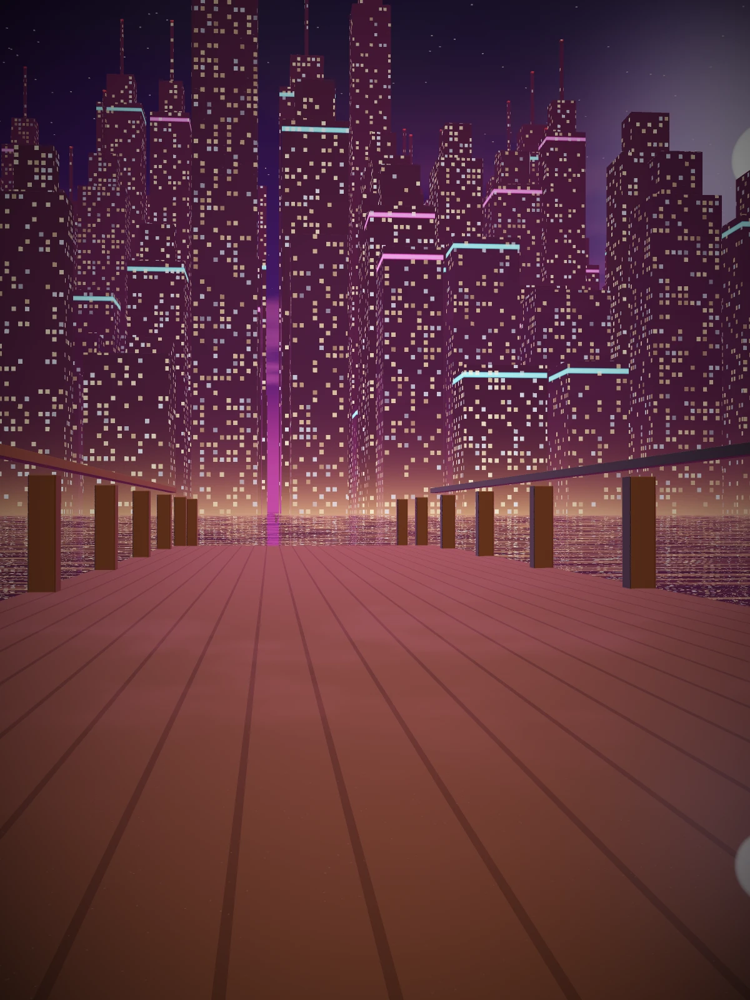

Marisol Vega
Cresceu entre marinas e casas de penhor. Aprendeu cedo que em Palmera ninguém dá nada de graça — e decidiu parar de pedir.
Depois de três anos presa por um crime que não planejou, Marisol sai com uma única meta: nunca mais depender da sorte. Tem um plano, contatos em todo o litoral e muito pouco a perder.
“Não é roubo se ninguém sentir falta.”